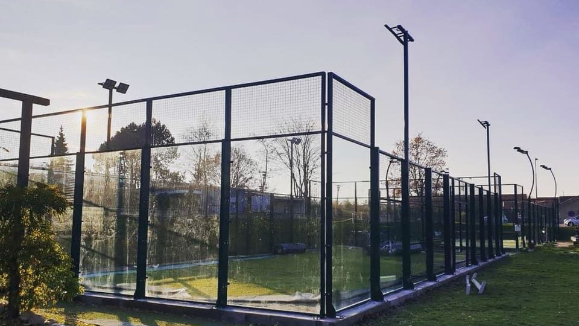

1 / 3

Padeltenneisbanekamp udendørs
2 / 3
Padeltennisbanekamp indendørs
3 / 3

Padeltennisbane solnedgang
Padel er en ketsjer sport som stammer fra Mellemamerika. Padel er kendetegnet ved banens form, der er en blanding af Tennis og Squash. Der indgår to hold af to personer på hvert hold. Da Sporten ikke er mere end 50 år gammel, er den ikke så udbredt globalt. Padel bliver spillet mest i Spanien og Mellemamerika.
Padel Tennis banerne er indhegnet af fire vægge. Væggene fungerer både som banens grænser og samtidig også som den del af spillet